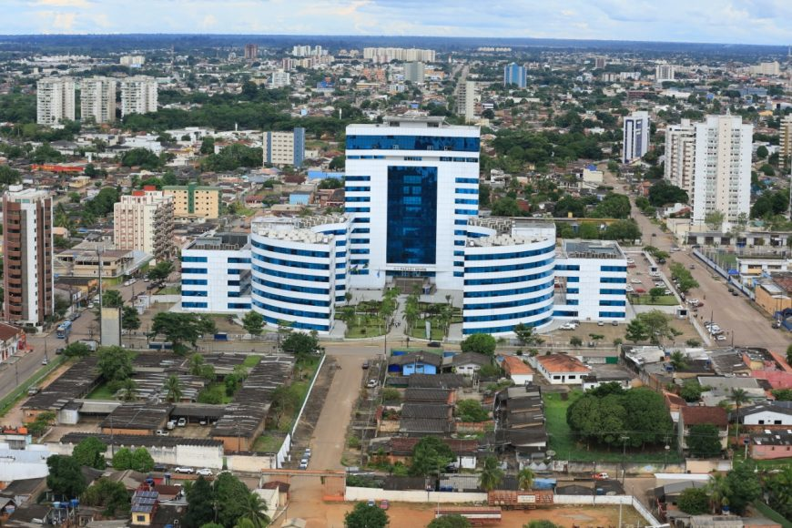

Rondônia é um estado localizado na região Norte do Brasil, com uma população de aproximadamente 1,8 milhão de habitantes. Sua capital é Porto Velho, uma cidade que serve como importante centro econômico e cultural da região. Entre os principais pontos turísticos de Rondônia estão o Parque Nacional de Pacaás Novos, conhecido por sua beleza natural e biodiversidade, o Rio Madeira, que é fundamental para a economia e transporte local, e as cachoeiras e áreas de floresta que oferecem contato direto com a natureza. Quanto ao governador atual, até outubro de 2023, o governador de Rondônia é Marcos Rocha.
